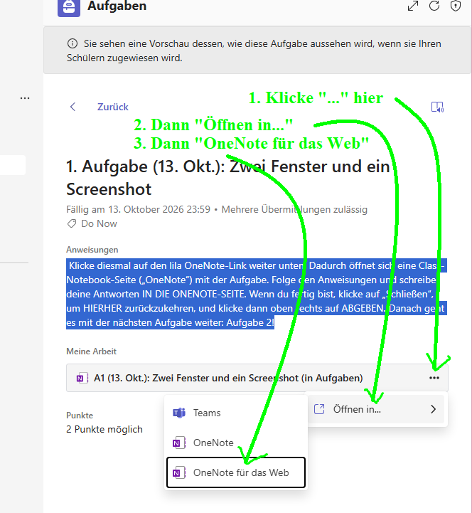

Windows 11
Aufgabe 1: Zwei Fenster und ein Screenshot
Dein Ziel: Diese Aufgabe ist links. Die allgemeinen Anleitungen sind rechts. Ein Screenshot zeigt beide Fenster.
Die OneNote-Seite öffnen
- Öffne die passende Aufgabe in Teams.
- Suche unter Meine Arbeit den OneNote-Link.
- Klicke rechts neben dem Link auf die drei Punkte ….
- Klicke auf Öffnen in….
- Klicke auf OneNote für das Web.
Die OneNote-Seite öffnet sich in einem eigenen Tab in Edge. Lass den Teams-Tab offen.

1. Die Anleitungen öffnen
Ein Tab ist ein Reiter ganz oben in Edge. Ein Fenster kann mehrere Tabs haben.
- Lass diese Aufgabe in Edge offen.
- Öffne unsere allgemeinen Anleitungen. Sie öffnen sich in einem neuen Tab.
2. Aus dem Tab ein Fenster machen
- Zeige mit der Maus auf den Tab der allgemeinen Anleitungen ganz oben.
- Halte die linke Maustaste gedrückt. Ziehe den Tab deutlich nach unten, weg von der Tab-Leiste.
- Lass los. Jetzt haben die allgemeinen Anleitungen ein eigenes Fenster.
3. Die Fenster nebeneinander legen
- Klicke in das Fenster mit dieser Aufgabe. Halte die Windows-Taste gedrückt. Drücke die linke Pfeiltaste ⬅.
- Die Aufgabe ist jetzt links. Wenn Windows kleine Fenster zur Auswahl zeigt, klicke auf die allgemeinen Anleitungen.
- Sind die Anleitungen noch nicht rechts? Klicke in ihr Fenster. Drücke Windows + ➡.
- Prüfe: Aufgabe links. Allgemeine Anleitungen rechts.
Ohne Tastatur
Halte oben am Fenster eine freie Stelle neben den Tabs mit der linken Maustaste fest. Ziehe das Fenster bis zum linken Bildschirmrand. Wenn eine Vorschau erscheint, lass los. Ziehe das andere Fenster genauso an den rechten Rand.
4. Einen Screenshot machen
Ein Screenshot ist ein Bild vom Bildschirm.
- Drücke Windows + Umschalt + S. Der Bildschirm wird dunkler.
- Wähle oben das Rechteck, wenn es noch nicht gewählt ist.
- Halte die linke Maustaste gedrückt. Ziehe ein Rechteck um beide Fenster. Die beiden Seitentitel sollen sichtbar sein.
- Lass los. Das Bild ist jetzt kopiert.
Meine Arbeit in OneNote
Klicke oben in Edge auf den Tab mit deiner OneNote-Seite.
Füge dein Bild unter dem Aufgabentext und über dem Beispielbild ein. Klicke dort auf eine freie Stelle. Drücke Strg + V.
Schreibe darunter: Welche zwei Tasten bringen ein Fenster nach links?
Prüfen und abgeben
- Mein Bild zeigt beide Fenster und ihre Seitentitel.
- Ich habe die beiden Tasten aufgeschrieben.
Klicke oben in Edge auf den Teams-Tab. Öffne dort wieder die passende Aufgabe, falls nötig. Klicke oben rechts auf Abgeben. Prüfe: Steht dort Abgegeben?